RR-02 RR-02-06-02 — Chief Dispatcher & Network Desk
This process involves the Chief Dispatcher and Network Desk managing train movements, ensuring efficient scheduling, safety, and compliance with regulations.
🗺 BPMN Process Flow
{kind=link}

Click diagram to zoom & pan • Scroll to zoom • Drag to pan • Download SVG
📋 Process Attributes
| Process ID | RR-02-06-02 |
|---|---|
| Domain Family | NETWORK & PLANNING |
| L1 Domain | Dispatching & Train Movement |
| L2 Process Group | Chief Dispatcher & Network Desk |
| Trigger | Receiving updated traffic information or changes in the rail network from NetControl/CADx. |
| Outcome | Successful completion results in optimized train schedules, reduced delays, and adherence to regulatory requirements. |
| Systems | NetControl/CADx I-ETMS PS Technology (PST) EHMS HASTUS TRAIN II |
| Regulatory Hooks | 49 CFR Part 232 GCOR 6.28 49 CFR Part 217 49 CFR Part 220 |
📋 L4 Process Steps
| Step | Name | Role | System | Input | Output | KPI | Pain Point / Risk | Decision? | Exception? |
|---|---|---|---|---|---|---|---|---|---|
| 1.1 | Receive Traffic Updates | Chief Dispatcher | NetControl/CADx | Traffic information from NetControl/CADx | Updated train schedules | Train schedule accuracy within 5 minutes | Inaccurate traffic data leading to scheduling errors | Y | N |
| 1.2 | Review Train Schedules | Chief Dispatcher | NetControl/CADx | Updated train schedules | Adjusted train schedules | Train schedule adjustments within 30 minutes | Overlapping schedules causing delays | Y | N |
| 1.3 | Assign Trains to Crews | Crew Caller/Crew Dispatcher | PS Technology (PST) | Adjusted train schedules | Crew assignments | Crew assignment accuracy 95% | Insufficient crew availability | N | Y |
| 1.4 | Conduct Pre-Departure Checks | Train Dispatcher | EHMS (Equipment Health Management System) | Crew assignments | Pre-departure checklists | Pre-departure checks completed within 10 minutes | Equipment malfunctions delaying departures | Y | N |
| 1.5 | Monitor Train Movements | Control Operator | NetControl/CADx, I-ETMS | Pre-departure checklists | Train movement data | Train movements tracked in real-time | Loss of communication with trains | Y | N |
| 1.6 | Adjust Schedules Based on Real-Time Data | Chief Dispatcher | NetControl/CADx, I-ETMS | Train movement data | Adjusted schedules | Schedule adjustments within 15 minutes of delay | Inability to quickly adjust for delays | Y | N |
| 1.7 | Ensure Compliance with Regulations | Chief Dispatcher | NetControl/CADx, EHMS | Adjusted schedules | Regulatory compliance reports | Compliance rate 98% | Non-compliance with safety regulations | Y | N |
| 1.8 | Coordinate Interline Operations | Chief Dispatcher | Interline Settlement System (ISS), Switching Settlement Data Exchange (SSDX) | Regulatory compliance reports | Interline coordination plans | Interline coordination accuracy 90% | Miscommunication between railroads | Y | N |
| 1.9 | Monitor Terminal Operations | Train Dispatcher | NetControl/CADx, HASTUS | Interline coordination plans | Terminal operation data | Terminal dwell under 24 hours | Long terminal stays causing delays | Y | N |
| 1.10 | Optimize Train Routes | Chief Dispatcher | NetControl/CADx, I-ETMS | Terminal operation data | Optimized train routes | Route optimization efficiency 85% | Suboptimal routing causing inefficiencies | Y | N |
| 1.11 | Ensure Train Safety | Train Dispatcher | EHMS, I-ETMS | Optimized train routes | Safety compliance reports | Safety incidents reduced by 75% | Increased safety risks due to operational errors | Y | N |
| 1.12 | Report and Document Process | Chief Dispatcher | NetControl/CADx, TRAIN II | Safety compliance reports | Process documentation | Documentation accuracy 95% | Incomplete or inaccurate documentation | N | Y |
📊 KPIs & Risk Register
KPIs
Train schedule accuracy within 5 minutes Crew assignment accuracy 95% Pre-departure checks completed within 10 minutes Train movements tracked in real-time Schedule adjustments within 15 minutes of delay Compliance rate 98% Interline coordination accuracy 90% Terminal dwell under 24 hours Route optimization efficiency 85% Safety incidents reduced by 75% Documentation accuracy 95%
Key Risks
Air brake test defect released to the road Non-compliance with safety regulations Miscommunication between railroads Long terminal stays causing delays Suboptimal routing causing inefficiencies Increased safety risks due to operational errors Incomplete or inaccurate documentation
Swim Lanes
Chief Dispatcher · 1.1, 1.2, 1.5, 1.6, 1.7, 1.8, 1.10, 1.11, 1.12 Crew Caller/Crew Dispatcher · 1.3 Train Dispatcher · 1.4, 1.9, 1.11 Control Operator · 1.5